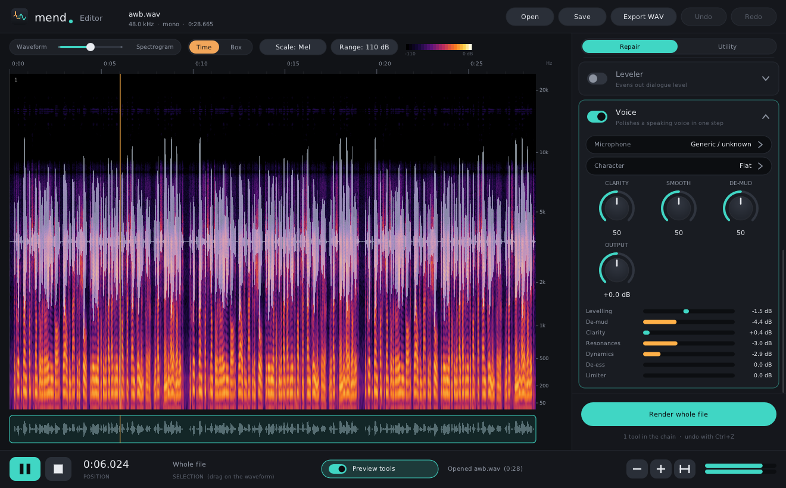
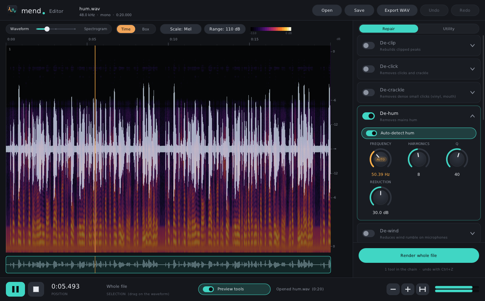
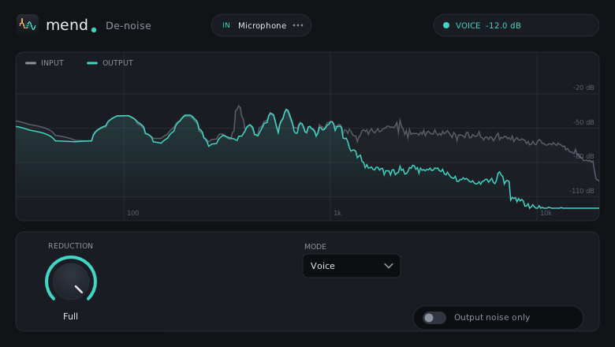
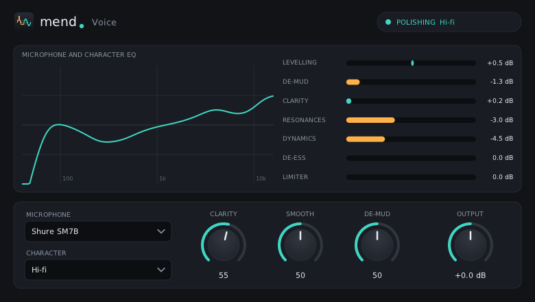

Free and open source · Windows, macOS, Linux
Repair your recordings.
For nothing.
Mend fixes the everyday problems in audio: hiss, hum, clicks, crackle, clipping, plosives, sibilance, breaths, wind, room reverb and uneven levels. Use the editor, or put any of its fourteen tools straight into your DAW.
MIT licence · no account, no subscription, no telemetry

01 · Tools
What it fixes
Every tool runs in the editor, as a plugin in your DAW (VST3, CLAP, LV2 and, on a Mac, Audio Unit) and as a standalone app for live input. Pick a problem, then click a tool to see it.
02 · Editor
An editor built for repair
- Waveform to spectrogram on one slider, so you see problems as well as hear them.
- Spectral selection: drag a box around a cough, a siren or a squeak and repair just that.
- A repair chain: switch on any mix of tools, preview them live, then render.
- Controls that move: while you preview, De-hum's frequency follows the hum and every tool shows what it's doing.
- Projects: save the audio and every setting, and pick up where you left off.
- Utility modules: loudness to a target (BS.1770), EQ match, phase, azimuth, resample, trim silence and more.
- Opens almost anything: WAV, AIFF, FLAC, MP3, Ogg, Opus, AAC and ALAC, with full undo.

03 · De-noise
De-noise: more noise gone, less sparkle
Two engines, one switch:
- Voice takes noise out of speech with nothing to learn: traffic, fans, keyboards, rain, a busy room. It uses DeepFilterNet3, a small open-source neural network that only removes what isn't speech. It doesn't generate or re-synthesise your voice. It runs on your computer, in real time, with no data leaving it.
- Any sound works on music, ambience and everything else. Learn the noise from a gap or let it track the noise as it changes. Rebuilt in 0.10 to remove about 3 dB more noise with less of the twinkly "musical noise" that noise reduction can leave behind. Turn up Smoothing and it's almost gone.
Every claim is measured: the benchmark comes with the source, so you can check the numbers yourself. See the results.

04 · Voice
Voice: polish speech in one step
For podcasts, voice-over and video. Pick your microphone and three controls do the rest:
- Clarity brings consonants forward.
- Smooth evens out levels, closes the gaps between phrases and tames resonances.
- De-mud cuts boxy low-mid build-up, only when it's there.
28 microphone profiles, from studio dynamics to USB mics, earbuds and phones. Where the manufacturer publishes a frequency-response chart, the profile is built from it.

05 · Download
Download
The newest release, for your system.
Windows
Windows 10 and 11, 64-bit. Choose to install the whole thing, or the editor, the standalone apps, and VST3, CLAP and LV2 separately.
Installer (.exe) or a .zip to copy by handmacOS
macOS 10.15 or later, on Apple silicon and Intel. The installer adds Audio Unit to the same choices; click Customise to pick.
Installer (.pkg) or a .zip to copy by handLinux
64-bit x86. Unpack and run install.sh to put everything in your home folder.
| System | Editor | Standalone apps | VST3 | CLAP | LV2 | Audio Unit |
|---|---|---|---|---|---|---|
| Windows | ✓ | ✓ | ✓ | ✓ | ✓ | – |
| macOS | ✓ | ✓ | ✓ | ✓ | ✓ | ✓ |
| Linux | ✓ | ✓ | ✓ | ✓ | ✓ | – |
The builds aren't code-signed yet. On Windows, if SmartScreen warns, choose More info, then Run anyway. On a Mac, right-click the installer and choose Open the first time. All releases and changes.
06 · Open source
Open source, for good
Mend is MIT licensed: use it for anything, commercial work included, and change it as you like. The code, the artwork and the documentation are all on GitHub, written from published research, with nothing copied from commercial products.
07 · Questions
Questions
Is it really free?
Yes. No trial, no account, no adverts and nothing phones home. The MIT licence means it stays that way.
Which hosts does it work in?
Any host that loads VST3, CLAP, LV2 or Audio Unit plugins. It's tested in Cakewalk Sonar and Audacity 4 on Windows and Linux, at display scaling from 100% to 225%.
Does it use AI?
Only in one place, and not the generative kind. De-noise's Voice mode uses DeepFilterNet3, a small open-source network (MIT/Apache-2.0) that decides how much of each frequency to keep. It doesn't invent or re-synthesise anything. It runs locally, with no cloud and no account, and is built into Mend with its own code, so there's nothing extra to install. Every other tool is signal processing you can read: spectral estimation, autoregressive interpolation, dynamics and so on.
Can I use the standalone apps live?
Yes. Each tool's app processes your audio input in real time. Input starts switched off so a microphone can't feed back through your speakers: click the banner at the top to turn it on.
Something doesn't work. Where do I say?
Open an issue on GitHub, with what you did and what happened. A screenshot or a short audio clip helps a lot.